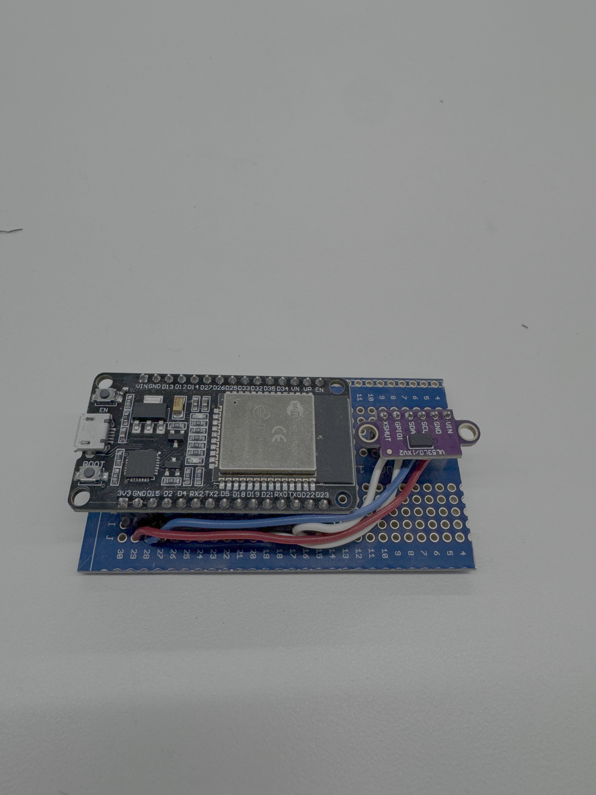

<div class="textcontainer">
<p class="margin"></p>
<h3>Final Project: Bed Scale</h3>
<p style="color:darkviolet; font-size:18px;">
I successfully tested my project on two different trucks, but due to various difficulties, have not included a video. I ended up doing my calibration and testing in the rain, which was not ideal given that I have not really developed a water resistant housing yet. I was also accessing my web page with my phone and had all the people with me acting as weights to actually test my project. For this reason, it was very hard to actually get a video, and the video would not have shown much since people were in the bed, the phone was in my hand with the readout, and my sensor was underneath the car.
<br>
Instead, I have attatched a video of a mock calibration done on my desk with fake weights.
</p>
<!-- VIDEO + DESCRIPTION -->
<div style="display:flex; flex-wrap:wrap; gap:10px; align-items:flex-start;">
<video height="440" controls style="flex:1; min-width:280px;">
<source src="mockcalibratoin.mov" type="video/mp4">
</video>
<p style="color:darkviolet; font-size:18px; flex:1; min-width:280px;">
This video includes a mock calibration I did with a series of fake weights. In the video I move the sensor through a range of distances, corresponding to a full weight range in a car and you can see the readout. I went through this process many times, adjusting the code for increased stability of readout vs increased responsiveness, and it was very helpful.
</p>
</div>
<p style="color:darkviolet; font-size:18px;">
Below are some photos of my circuit board and my webpages. I have a very basic circuit that just connects my esp 32 to the VLOX 53 distance sensor. Initially I had separate links for calibration, point storage, and readout, just to make sure that each part was working and make debugging easier. I then moved to having it all on one page, but now have it on two pages, which are linked together. This way once you do an initial calibration, you can just stay on the readout page without risking accidentally clearing your calibration history and adding another point and messing it up.
</p>
<!-- IMAGE GRID -->
<div style="display:flex; flex-wrap:wrap; gap:10px; justify-content:center;">
<p></p>
<img src="earlycalibrationpage.png" alt="early calibration webpage" style="width:45%; height:auto;">
<img src="calibrationpage.png" alt="calibration webpage" style="width:45%; height:auto;">
<img src="readoutpage.png" alt="readout webpage" style="width:45%; height:auto;">
</div>
<p style="color:darkviolet; font-size:18px;">
My initial car testing was successful, but also bighlighted some difficulties. To start with successes...
</p>
<!-- SENSOR ON CAR IMAGES -->
<div style="display:flex; flex-wrap:wrap; gap:10px; justify-content:center;">
<img src="oncar1.png" alt="sensor on car 1" style="width:45%; height:auto;">
<img src="oncar2.png" alt="sensor on car 2" style="width:45%; height:auto;">
</div>
<p style="color:darkviolet; font-size:18px;">
The next problem was in the readout consistency...
</p>
<p style="color:darkviolet; font-size:18px;">
Below is a basic model of my final project. The black represents the rear axel and differential...
</p>
<!-- FINAL PROJECT MODEL DOWNLOAD -->
<div class="flexrow" style="display:flex; justify-content:center; margin:1rem 0;">
<a id="btn" href="FPbasicmodel.f3d" download>view final project model</a>
</div>
<p style="color:darkviolet; font-size:18px;">
Timeline:<br>
I have already written the code for my sensor, but have not tested it yet...
</p>
</div>